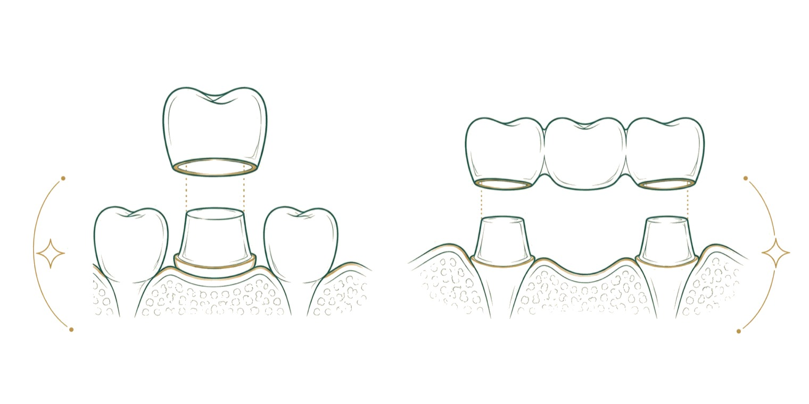

"Kaplama yaptırmam gerekiyor" cümlesi, diş hekimine gelen hastaların en sık kurduğu cümlelerden biridir. Ancak kaplama tek bir uygulama değildir; malzemesi, dişten ne kadar doku alındığı ve ağızda ne kadar süre kalacağı kişiden kişiye değişir. Bu rehberde zirkonyum kaplamanın ne olduğunu, hangi durumda gerçekten gerektiğini, diğer seçeneklerden farkını ve uzun süre sorunsuz kullanmak için nelere dikkat etmek gerektiğini anlatıyoruz.
Zirkonyum kaplama nedir?
Zirkonyum kaplama, dişin üstünü bir başlık gibi tamamen saran kron türüdür. Kronun iskeleti, zirkonyum oksit adı verilen, metal içermeyen ve çok sert bir seramikten hazırlanır; üzeri, yanındaki dişlere uyacak tonda renklendirilir. Metal içermediği için diş eti kenarında koyu bir çizgi oluşturmaz ve ışığı doğal dişe daha yakın biçimde yansıtır. Halk arasında "zirkonyum diş" ya da "zirkon kaplama" olarak da bilinir.
Kron, dişin kaybedilen yapısını yerine koyar ve kalan diş dokusunu çiğneme kuvvetlerine karşı korur. Bu nedenle zirkonyum kaplamayı yalnızca estetik bir işlem olarak görmek doğru değildir; çoğu zaman zayıflamış bir dişi ağızda tutmanın yoludur.
Her kırık ya da renkli diş kaplama mı ister?
Hayır. Kaplama kararı, dişte ne kadar sağlam doku kaldığına bağlıdır. Küçük bir kırık ya da sınırlı bir çürük çoğu zaman dolguyla onarılabilir. Dişin bir bölümü kaybedilmiş ama yan duvarları sağlamsa, dişin yalnız eksik kısmını tamamlayan parça restorasyonlar (inley, onley) daha az doku kaldırarak aynı işi görebilir. Renk sorununda ise önce beyazlatma ya da yalnız ön yüzü kaplayan lamina değerlendirilir.
Kron genellikle şu durumlarda gündeme gelir: dolgusu dişin büyük bölümünü kaplayan ve artık tutunmayan dişler, kanal tedavisi sonrası kırılma riski taşıyan dişler, çatlak ya da ileri derecede aşınmış dişler ve köprüye destek olacak dişler. Bu ayrım muayene ve röntgen olmadan yapılamaz; aynı görünen iki diş için farklı çözümler önerilebilir.
Zirkonyum, metal destekli porselen ve cam seramik
Bugün kronlarda üç malzeme ailesi öne çıkar. Metal destekli porselen uzun yıllardır kullanılan, dayanıklı bir seçenektir; ancak altındaki metal, ince diş etlerinde kenarda gri bir gölge oluşturabilir. Cam seramik kronlar ışığı en doğal geçiren malzemelerdendir ve özellikle ön dişlerde estetik açıdan tercih edilir; buna karşılık ağır çiğneme yükü alan bölgelerde dikkatli seçilir. Zirkonyum ise bu ikisinin arasında, hem sağlam hem metal içermeyen bir seçenek olarak arka dişlerde ve uzun köprülerde sık kullanılır.
Hangisinin seçileceğine dişin konumu, karşısındaki dişlerin yapısı, diş sıkma alışkanlığı ve kişinin beklentisi birlikte bakılarak karar verilir. Tek bir ağızda farklı dişler için farklı malzemeler seçilmesi de olağandır.
Kaplama dişe zarar verir mi?
Kronun oturabilmesi için dişin dış yüzeyinden bir miktar doku kaldırılır; bu adım geri alınamaz. Bu yüzden kaplama, gerekmediği bir dişe "güzel görünsün" diye yapılmamalıdır. Gerektiği durumda ise kron, zaten zayıflamış bir dişi kırılmaktan korur ve çekim ihtimalini azaltır.
Dişin canlılığı da önemlidir. Derin çürüğü olan ya da daha önce çok işlem görmüş dişlerde, kaplama sonrasında sinir dokusu etkilenebilir ve ileride kanal tedavisi gerekebilir. Hekiminiz bu riski muayenede değerlendirir; gerekirse kaplamadan önce dişin durumu ayrıca incelenir.
Süreç adım adım
Zirkonyum kaplama birkaç ziyarete yayılan bir süreçtir. İlk ziyarette muayene yapılır, röntgen istenir ve plan konuşulur. Çürük ya da diş eti iltihabı varsa önce bunlar tedavi edilir; sağlıksız bir zemin üzerine yapılan kron uzun ömürlü olmaz.
Hazırlık ziyaretinde diş lokal anestezi altında küçültülür ve ölçü alınır. Kliniğimizde ölçü, ağız içi tarayıcıyla dijital olarak alınır ve kronlar klinik bünyesindeki laboratuvarda hazırlanır. Kalıcı kron hazırlanırken dişi korumak için geçici bir kaplama takılır.
Prova ziyaretinde kronun dişe oturması, komşu dişlerle teması, ısırma ilişkisi ve rengi kontrol edilir. Uygunsa kron özel bir yapıştırıcıyla sabitlenir. Ziyaret sayısı, kaplanacak diş sayısına ve dişlerin başlangıç durumuna göre değişir; kesin sayı planınızda yazılıdır.
Ne kadar dayanır?
Zirkonyum kronun ömrü için tek bir rakam vermek doğru olmaz. Malzemenin kendisi çok dayanıklıdır; kronu çoğu zaman eskiten şey malzeme değil, kronun kenarındaki doğal dişte başlayan çürük, diş eti çekilmesi ya da gece diş sıkmadır. Bilimsel çalışmalar, iyi planlanmış ve düzenli kontrol edilen kronların uzun yıllar ağızda kalabildiğini gösterir. Bu nedenle kron takıldıktan sonra düzenli kontrol önerilir.
Kron kırılmasa bile zamanla diş eti hafifçe çekilebilir ve kronun kenarı görünür hale gelebilir. Böyle bir durumda kronun yenilenip yenilenmeyeceğine estetik beklenti ve kenar sağlığına bakılarak karar verilir.
Ömrünü uzatan alışkanlıklar
Kron çürümez, ama kronun bittiği yerdeki doğal diş çürüyebilir. Bu nedenle günde iki kez florlu macunla fırçalama, kron kenarlarına özen gösterme ve dişler arasını diş ipi ya da ara yüz fırçasıyla temizleme şarttır. Köprülerde gövdenin altını temizlemek için özel diş ipleri kullanılır.
Gece diş sıkan ya da gıcırdatan kişilerde kronlar ve karşısındaki dişler daha çok zorlanır; hekiminiz bu durumda gece plağı önerebilir. Kalem, buz ya da çekirdek kabuğu gibi sert cisimleri dişle kırmamak, düzenli kontrollere gelmek ve diş taşı temizliğini aksatmamak kronun ömrünü uzatır.
Kaplama sonrası ilk günler
Kron yapıştırıldıktan sonraki ilk saatlerde, uyuşukluk geçene kadar yemek yememek ve sıcak içecekten kaçınmak önerilir; uyuşuk dudak ya da yanak farkında olmadan ısırılabilir. İlk birkaç gün kronlu dişte sıcak ve soğuğa hafif hassasiyet olabilir; bu çoğunlukla kendiliğinden azalır.
Isırırken kronlu dişin diğerlerinden önce temas ettiğini hissediyorsanız, bunu beklemeyin ve hekiminize söyleyin. Küçük bir yükseklik farkı kısa bir ayarla giderilir; giderilmezse dişte ağrıya ve kronda çatlamaya yol açabilir. Diş ipi kronların arasından takılmadan geçmeli; takılıyorsa ya da yiyecek sıkışıyorsa bu da kontrolde düzeltilir.
Sık sorulan sorular
Zirkonyum kaplama ağrılı mı?
Diş küçültülürken lokal anestezi uygulanır; işlem sırasında ağrı beklenmez. Sonraki birkaç gün sıcak ve soğuğa hafif hassasiyet olabilir; uzun sürerse hekiminize başvurun.
Zirkonyum kaplamanın rengi zamanla değişir mi?
Seramik yüzey çay, kahve ya da sigara ile kolay renk almaz. Doğal dişler ise zamanla koyulaşabileceği için yan dişlerle aradaki uyum yıllar içinde değişebilir.
Kaplamadan önce dişlerimi beyazlatmalı mıyım?
Beyazlatma düşünüyorsanız kronlardan önce yapılır, çünkü kronun rengi sonradan değiştirilemez. Kronun rengi, beyazlatılmış dişlere göre seçilir.
Zirkonyum kaplama çıkar mı?
İyi oturmuş ve yapıştırılmış bir kron kendiliğinden çıkmaz. Altındaki dişte çürük ya da kırık oluşursa gevşeyebilir; böyle bir durumda kronu yapıştırmaya çalışmadan hekiminize gelin.
Tek diş için de zirkonyum kullanılır mı?
Evet. Tek diş, birkaç diş ya da köprü için kullanılabilir; malzeme seçimi dişin konumuna göre yapılır.
Kaplamalı dişe kanal tedavisi yapılabilir mi?
Gerekirse yapılabilir; tedavi çoğu zaman kronun üzerinden açılan küçük bir delikten yürütülür ve delik sonra kapatılır. Kronun yenilenmesi gerekip gerekmediğine hekiminiz karar verir.
Kaplama yaptırmadan önce hangi soruları sormalıyım?
Dişte neden kaplama gerektiğini, dolgu ya da parça restorasyon gibi daha az doku alan bir seçenek olup olmadığını ve kontrollerin nasıl planlanacağını sorabilirsiniz. Bu soruların cevabı muayenede, sizin dişleriniz üzerinden konuşulur.
Kaynakça
- American Dental Association (Amerikan Diş Hekimleri Birliği). Kronlar ve köprüler, MouthHealthy hasta bilgilendirme portalı. mouthhealthy.org
- Türk Diş Hekimleri Birliği (TDB). Ağız ve diş sağlığı hasta bilgilendirme kaynakları. tdb.org.tr
Bu konu hakkında soru sormak ister misiniz? Diş hekimlerimize dilediğiniz saatte yazabilirsiniz.
Bize yazın